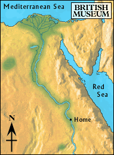

Desert

The boy picked up the track of a caravan trail leading out into the desert and decided to follow it. He walked for several days into the desert.
The desert was a dangerous place. When the sun went down, the animals came out of their dens to look for food.
The track split into two roads, one path led to an oasis, and the other to a quarry.
Should he go to an oasis, or head straight for the quarry?